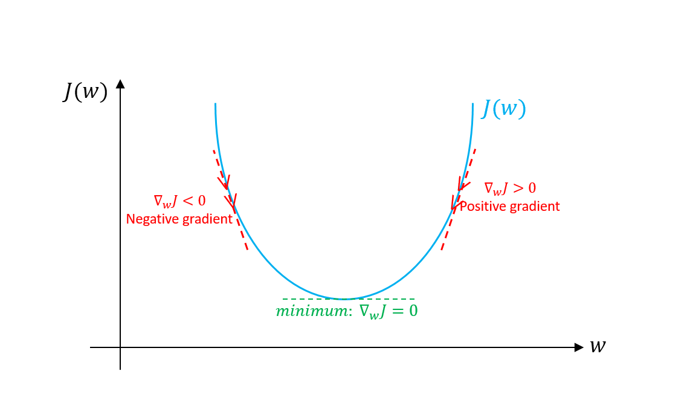

Introduction
Optimization refers to the task of minimizing/maximizing an objective function \(f(x)\) parameterized by \(x\). In machine/deep learning terminology, it’s the task of minimizing the cost/loss function \(J(w)\) parameterized by the model’s parameters \(w \in \mathbb{R}^d\). Optimization algorithms (in case of minimization) have one of the following goals: - Find the global minimum of the objective function. This is feasible if the objective function is convex, i.e. any local minimum is a global minimum. - Find the lowest possible value of the objective function within its neighbor. That’s usually the case if the objective function is not convex as the case in most deep learning problems.
There are three kinds of optimization algorithms:
- Optimization algorithm that is not iterative and simply solves for one point.
- Optimization algorithm that is iterative in nature and converges to acceptable solution regardless of the parameters initialization such as gradient descent applied to logistic regression.
- Optimization algorithm that is iterative in nature and applied to a set of problems that have non-convex cost functions such as neural networks. Therefore, parameters’ initialization plays a critical role in speeding up convergence and achieving lower error rates.
Gradient Descent is the most common optimization algorithm in machine learning and deep learning. It is a first-order optimization algorithm. This means it only takes into account the first derivative when performing the updates on the parameters. On each iteration, we update the parameters in the opposite direction of the gradient of the objective function \(J(w)\) w.r.t to the parameters where the gradient gives the direction of the steepest ascent. The size of the step we take on each iteration to reach the local minimum is determined by the learning rate \(\alpha\). Therefore, we follow the direction of the slope downhill until we reach a local minimum.
In this notebook, we’ll cover gradient descent algorithm and its variants: Batch Gradient Descent, Mini-batch Gradient Descent, and Stochastic Gradient Descent.
Let’s first see how gradient descent and its associated steps works on logistic regression before going into the details of its variants. For the sake of simplicity, let’s assume that the logistic regression model has only two parameters: weight \(w\) and bias \(b\).
- Initialize weight \(w\) and bias \(b\) to any random numbers.
- Pick a value for the learning rate \(\alpha\). The learning rate determines how big the step would be on each iteration.
- If \(\alpha\) is very small, it would take long time to converge and become computationally expensive.
- IF \(\alpha\) is large, it may fail to converge and overshoot the minimum.
Therefore, plot the cost function against different values of \(\alpha\) and pick the value of \(\alpha\) that is right before the first value that didn’t converge so that we would have a very fast learning algorithm that converges (see figure 1).
- The most commonly used rates are : 0.001, 0.003, 0.01, 0.03, 0.1, 0.3.
- Make sure to scale the data if it’s on very different scales. If we don’t scale the data, the level curves (contours) would be narrower and taller which means it would take longer time to converge (see figure 2).
Scale the data to have \(\mu = 0\) and \(\sigma = 1\). Below is the formula for scaling each example: \[\\{}\frac{x_i - \mu}{\sigma}\tag{1}\\{} \] 4. On each iteration, take the partial derivative of the cost function \(J(w)\) w.r.t each parameter (gradient): \[\frac{\partial}{\partial w}J(w) = \nabla_w J\tag{2}\\{}\] \[\frac{\partial}{\partial b}J(w) = \nabla_b J\tag{3}\\{}\] The update equations are: \[w = w - \alpha \nabla_w J\tag{4}\\{}\] \[b = b - \alpha \nabla_b J\tag{5}\\{}\] * For the sake of illustration, assume we don’t have bias. If the slope of the current values of \(w > 0\), this means that we are to the right of optimal \(w^*\). Therefore, the update will be negative, and will start getting close to the optimal values of \(w^*\). However, if it’s negative, the update will be positive and will increase the current values of \(w\) to converge to the optimal values of \(w^*\) (see figure 3):

- Continue the process until the cost function converges. That is, until the error curve becomes flat and doesn’t change.
- In addition, on each iteration, the step would be in the direction that gives the maximum change since it’s perpendicular to level curves at each step.
Now let’s discuss the three variants of gradient descent algorithm. The main difference between them is the amount of data we use when computing the gradients for each learning step. The trade-off between them is the accuracy of the gradient versus the time complexity to perform each parameter’s update (learning step).
Batch Gradient Descent
Batch Gradient Descent is when we sum up over all examples on each iteration when performing the updates to the parameters. Therefore, for each update, we have to sum over all examples: \[w = w - \alpha \nabla_w J(w)\tag{6}\]
for i in range(num_epochs):
grad = compute_gradient(data, params)
params = params - learning_rate * gradThe main advantages:
- We can use fixed learning rate during training without worrying about learning rate decay.
- It has straight trajectory towards the minimum and it is guaranteed to converge in theory to the global minimum if the loss function is convex and to a local minimum if the loss function is not convex.
- It has unbiased estimate of gradients. The more the examples, the lower the standard error.
The main disadvantages:
- Even though we can use vectorized implementation, it may still be slow to go over all examples especially when we have large datasets.
- Each step of learning happens after going over all examples where some examples may be redundant and don’t contribute much to the update.
Mini-Batch Gradient Descent
Instead of going over all examples, Mini-batch Gradient Descent sums up over lower number of examples based on batch size. Therefore, learning happens on each mini-batch of \(b\) examples:
\[w = w - \alpha \nabla_w J(x^{\{i:i + b\}}, y^{\{i: i + b\}}; w)\tag{7}\\{}\]
- Shuffle the training dataset to avoid pre-existing order of examples.
- Partition the training dataset into \(b\) mini-batches based on the batch size. If the training set size is not divisible by batch size, the remaining will be its own batch.
for i in range(num_epochs):
np.random.shuffle(data)
for batch in radom_minibatches(data, batch_size=32):
grad = compute_gradient(batch, params)
params = params - learning_rate * gradThe batch size is something we can tune. It is usually chosen as power of 2 such as 32, 64, 128, 256, 512, etc. The reason behind it is because some hardware such as GPUs achieve better runtime with common batch sizes such as power of 2.
The main advantages:
- Faster than Batch version because it goes through a lot less examples than Batch (all examples).
- Randomly selecting examples will help avoid redundant examples or examples that are very similar that don’t contribute much to the learning.
- With batch size < size of training set, it adds noise to the learning process that helps improving generalization error.
- Even though with more examples the estimate would have lower standard error, the return is less than linear compared to the computational burden we incur.
The main disadvantages:
- It won’t converge. On each iteration, the learning step may go back and forth due to the noise. Therefore, it wanders around the minimum region but never converges.
- Due to the noise, the learning steps have more oscillations (see figure 4) and requires adding learning-decay to decrease the learning rate as we become closer to the minimum.
With large training datasets, we don’t usually need more than 2-10 passes over all training examples (epochs). Note: with batch size \(b = m\), we get the Batch Gradient Descent.
Stochastic Gradient Descent
Instead of going through all examples, Stochastic Gradient Descent (SGD) performs the parameters update on each example \((x^i, y^i)\). Therefore, learning happens on every example:
\[w = w - \alpha \nabla_w J(x^i, y^i; w)\tag{7}\]
- Shuffle the training dataset to avoid pre-existing order of examples.
- Partition the training dataset into \(m\) examples.
for i in range(num_epochs):
np.random.shuffle(data)
for example in data:
grad = compute_gradient(example, params)
params = params - learning_rate * gradIt shares most of the advantages and the disadvantages with mini-batch version. Below are the ones that are specific to SGD:
- It adds even more noise to the learning process than mini-batch that helps improving generalization error. However, this would increase the run time.
- We can’t utilize vectorization over 1 example and becomes very slow. Also, the variance becomes large since we only use 1 example for each learning step.
Below is a graph that shows the gradient descent’s variants and their direction towards the minimum:
As the figure above shows, SGD direction is very noisy compared to mini-batch.
Challenges
Below are some challenges regarding gradient descent algorithm in general as well as its variants - mainly batch and mini-batch:
- Gradient descent is a first-order optimization algorithm, which means it doesn’t take into account the second derivatives of the cost function. However, the curvature of the function affects the size of each learning step. The gradient measures the steepness of the curve but the second derivative measures the curvature of the curve. Therefore, if:
- Second derivative = 0 \(\rightarrow\) the curvature is linear. Therefore, the step size = the learning rate \(\alpha\).
- Second derivative > 0 \(\rightarrow\) the curvature is going upward. Therefore, the step size < the learning rate \(\alpha\) and may lead to divergence.
- Second derivative < 0 \(\rightarrow\) the curvature is going downward. Therefore, the step size > the learning rate \(\alpha\).
As a result, the direction that looks promising to the gradient may not be so and may lead to slow the learning process or even diverge. - If Hessian matrix has poor conditioning number, i.e. the direction of the most curvature has much more curvature than the direction of the lowest curvature. This will lead the cost function to be very sensitive in some directions and insensitive in other directions. As a result, it will make it harder on the gradient because the direction that looks promising for the gradient may not lead to big changes in the cost function (see figure 7).
- The norm of the gradient \(g^Tg\) is supposed to decrease slowly with each learning step because the curve is getting flatter and steepness of the curve will decrease. However, we see that the norm of the gradient is increasing, because of the curvature of the curve. Nonetheless, even though the gradients’ norm is increasing, we’re able to achieve a very low error rates (see figure 8).
- In small dimensions, local minimum is common; however, in large dimensions, saddle points are more common. Saddle point is when the function curves up in some directions and curves down in other directions. In other words, saddle point looks a minimum from one direction and a maximum from other direction (see figure 9). This happens when at least one eigenvalue of the hessian matrix is negative and the rest of eigenvalues are positive.
- As discussed previously, choosing a proper learning rate is hard. Also, for mini-batch gradient descent, we have to adjust the learning rate during the training process to make sure it converges to the local minimum and not wander around it. Figuring out the decay rate of the learning rate is also hard and changes with different datasets.
- All parameter updates have the same learning rate; however, we may want to perform larger updates to some parameters that have their directional derivatives more inline with the trajectory towards the minimum than other parameters.